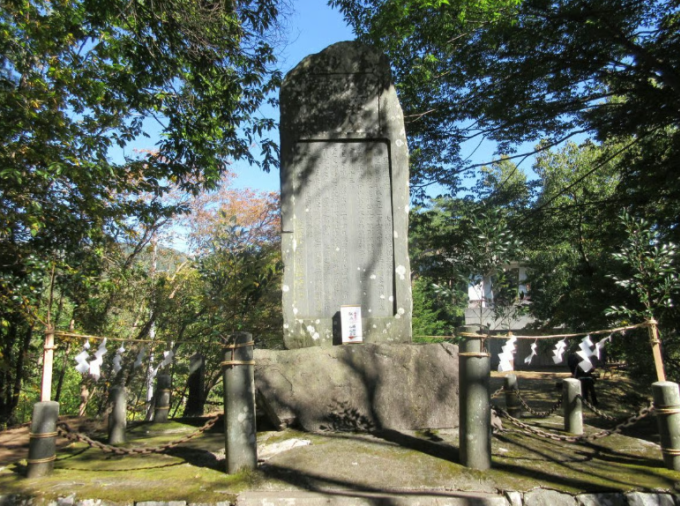

Mỹ – Iran đạt thỏa thuận về ngừng bắn, mở cửa eo biển Hormuz trong hai tuần
Mỹ và Iran đồng ý ngừng bắn trong hai tuần, Tehran sẽ cho phép tàu thuyền đi qua eo biển Hormuz trong thời gian này "với sự điều phối từ lực lượng vũ trăng".
Tỉnh Nagano duy trì lễ hội Enrei Onodachi với nghi thức tưởng niệm khoảng 20 giây, nhằm tái hiện các chuyến thăm chớp nhoáng của hai Thiên hoàng trong quá khứ. Trong hàng trăm lễ hội địa phương diễn ra mỗi năm trên khắp Nhật Bản, Lễ tưởng niệm Enrei Onodachi được biết đến là lễ hội ngắn đất nước khi diễn ra trong vòng 15-20 giây.
Enrei Onodachi được tổ chức hai lần mỗi năm vào tháng 6 và tháng 10 tại Công viên Enrei Onodachi, nằm ở đèo Shiojiri thuộc tỉnh Nagano, nhằm tưởng nhớ những chuyến ghé thăm trước đây của hai Thiên hoàng Minh Trị và Chiêu Hòa.
Trong hành trình qua vùng này, hai hoàng đế chỉ dừng chân trong thời gian rất ngắn. Sau này, người tái hiện các chuyến thăm chớp nhoáng này bằng cách tổ chức lễ hội diễn ra chỉ trong vài giây.

Lễ hội mùa xuân tưởng niệm chuyến thăm của Thiên hoàng Minh Trị vào ngày 24/6/1880, trong khi lễ hội mùa thu đánh dấu chuyến ghé thăm của Thiên hoàng Hirohito vào ngày 14/10/1947. Dù ngắn ngủi, sự kiện vẫn thu hút đông đảo người xem, các nhà sử học và du khách tò mò, những người tụ họp để chứng kiến một nghi lễ kết thúc gần như ngay khi vừa bắt đầu.
Lễ hội bắt đầu từ năm 1916, không lâu sau khi các làng Hirano, Nagaji, Shiojiri và Chikumachi dựng một bia đá để tưởng niệm chuyến thăm năm 1880 của Thiên hoàng Minh Trị. Sau chuyến thăm của Thiên hoàng Chiêu Hòa năm 1947, lễ hội mùa thu cũng được hình thành. Nghi lễ chính thường diễn ra vào khoảng 10h. Khi người phụ trách hô "Tất cả, cúi đầu", những người tham gia đồng loạt cúi đầu để tưởng niệm và sau cái cúi ngắn ngủi ấy, lễ hội kết thúc.
Trước năm 2006, toàn bộ sự kiện chỉ kéo dài 10 giây. Đến lễ hội mùa xuân năm 2006, thời lượng được kéo dài lên một phút sau khi chính quyền thành phố Okaya cho rằng 10 giây "quá ngắn để thể hiện sự tôn kính". Tuy nhiên, ngay trong lễ hội mùa thu cùng năm, thời gian lại bị rút xuống còn 30 giây vì chính quyền thành phố Shiojiri nhận định "một phút là quá dài". Đến mùa thu năm 2007, hai thành phố thống nhất thời lượng 20 giây. Tháng 10/2023, lễ hội mùa thu từng rút xuống còn 15 giây, nhưng đến năm 2024, thời lượng lại quay về mức 20 giây.
Giới chức và người dân, du khách tham gia lễ hội ngắn nhất Nhật Bản. Video: Manichi Dù diễn ra chớp nhoáng, lễ hội vẫn có sự tham dự của các quan chức từ hai thành phố Shiojiri và Okaya, bao gồm thị trưởng, hội đồng thành phố cùng hàng trăm người dân, du khách. Nghi thức ngắn gọn tượng trưng cho sự tôn kính đối với các chuyến viếng thăm của hoàng gia, đồng thời nhắc nhớ về mối liên hệ lịch sử giữa địa phương và hoàng thất Nhật Bản.
Mỹ và Iran đồng ý ngừng bắn trong hai tuần, Tehran sẽ cho phép tàu thuyền đi qua eo biển Hormuz trong thời gian này "với sự điều phối từ lực lượng vũ trăng".

Người dân Iran tập trung trên đường phố Tehran, vậy có và hô khẩu hiệu sau khi lệnh ngừng bắn hai tuần với Mỹ được công bố.

Nằm ở bộ nam eo biển Hormuz, cách Iran gần 34 km, bán đảo Musandam của Oman đang chứng kiến những hệ lụy về kinh tế và đời sống khi xung đột bùng phát.